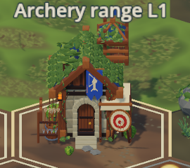
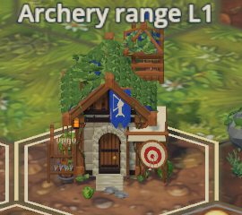
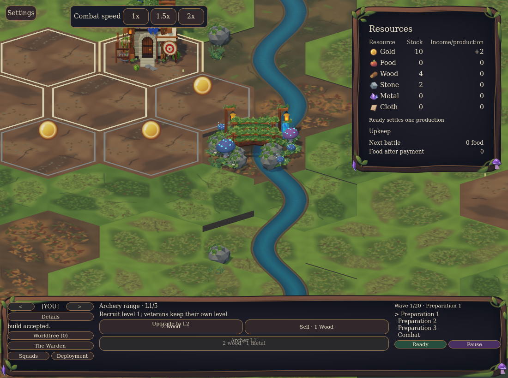
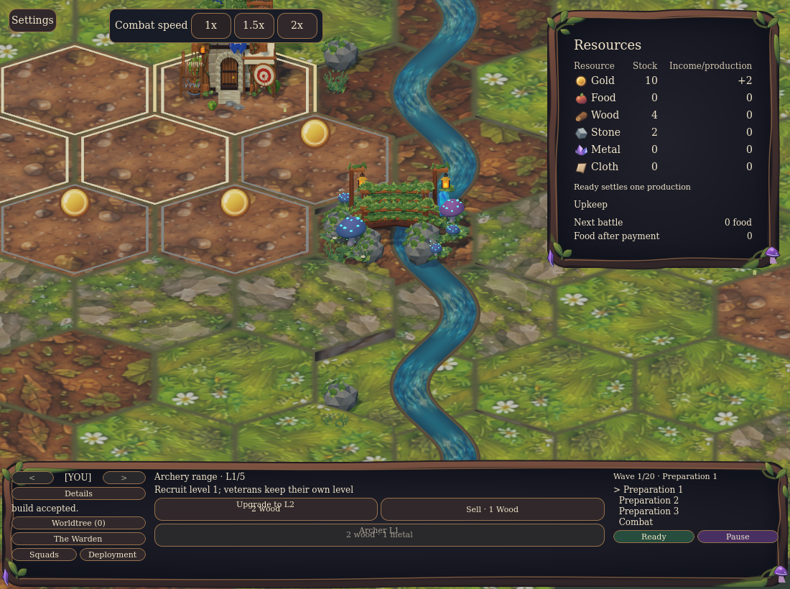

ODOT / ACTUAL GAME CAMERA / RX 6800
More painted detail.
A busier, still visibly tiled world.
Implemented and locally GPU-tested POC, not production art certification. Near/medium terrain is visibly richer; the fitted overview exposes more repeated hex borders. Archery's subtle grain/cloth detail largely disappears at overview. Read the tradeoffs before artistic acceptance.
These are real Godot game viewports, not the upstream Blender studio. Both revisions use the same executable witness, 1100×820 X11 window, Forward+ / Vulkan, fixed fair-weather light and cosmetic time 12, High preset, Woodland grading, exposure 1, 4× MSAA and identical camera/framing. Menu photo views hide only its central controls; no extra assets or terrain fixtures are installed. Solo uses the unchanged horizontal board and normal paid Archery construction. Native ambient animation/particles remain live, so these are not pose- or pixel-identical frames.
Results, coverage, preview and rollback · Exact source/asset revisions, PNG/manifest/DLL hashes, camera/graphics and observed costs · All imported GLB hashes · Full-resolution side-by-side overview PNG (BEFORE left / AFTER right)
Click a frame for its native 1100×820 pixels. The overview is the actual normal game-view scale; close views use permitted 3× zoom. Before images are retained, never re-rendered with the new pin. The two river frames demonstrate successive visible playback, not a claim that all pixel differences are water motion; the engine test separately checks real animated targets and fixed seams.
Archery · native-pixel crop, not invented detail
BEFORE · same 270×240 crop
AFTER · same 270×240 crop
Actual fitted solo overview
Paid Archery Range · permitted 3× close view
Actual district divider, bridge and river
BEFORE · assets 133c7cdeb368
AFTER · assets 2d88d355393f Later frame · same live river camera
BEFORE · assets 133c7cdeb368AFTER · assets 2d88d355393f